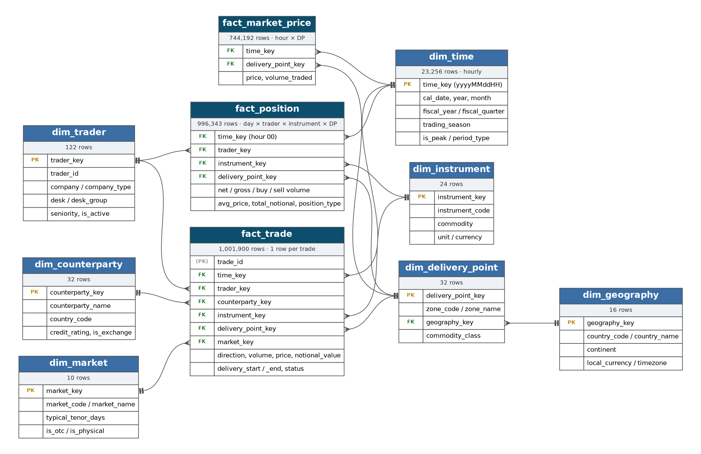
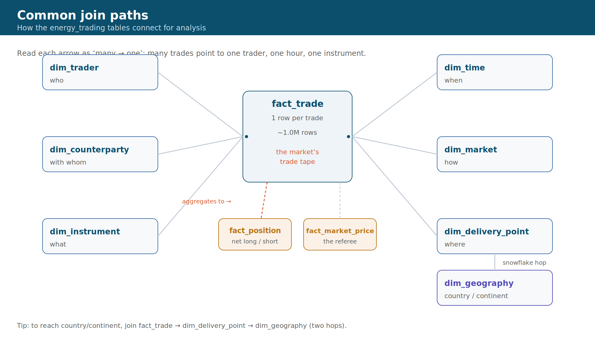
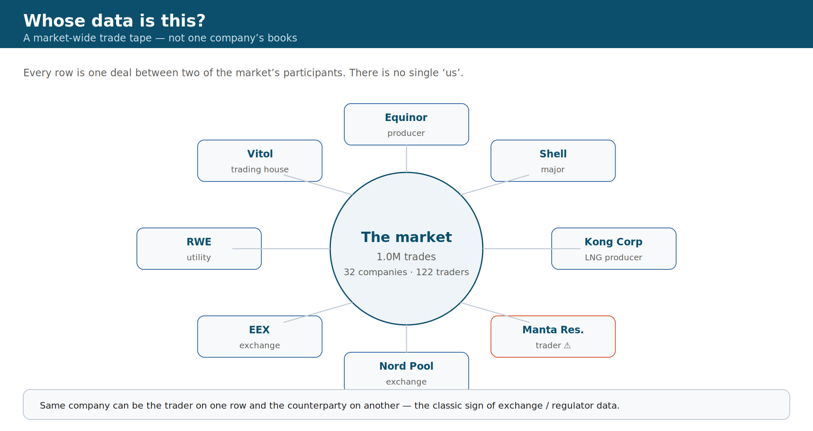

Interactive — open in a browser
Data model
Interactive ER diagram →
The star schema with straight connectors. Hover any line or table to highlight that relationship.
Data model
Model explorer →
Search all 10 tables, their columns, grain and the 13 relationships. Switch between cards and lists.
KPIs & story
Activity dashboard →
Filter by commodity, season and direction; watch KPIs, charts and the top-companies ranking update.
Genie
Question bank →
12 questions in a demo arc, warm-up to the surveillance finish. Click any to copy.
Get started — build the tables
Setup
Free Databricks workspace →
Step-by-step: create a free-forever Free Edition workspace, import the notebook, and build the tables.
Notebook
Download the notebook →
The .ipynb that generates the synthetic data and creates all 10 energy_trading tables.
{kind=link}
Sketch
Sketch to Dashboard →
The hand-drawn dashboard layout sketch — download the reference image.
Static reference — download, print, or slide

ER diagram (interactive) Straight connectors, hover to highlight relationships

Common join paths (interactive) Hover any line to trace a relationship

KPI map Every KPI grouped by the question it answers (PNG · SVG)

Whose data is this? (interactive) Hover a company to see its market link
How to use this pack
- Before the workshop: skim the ER diagram and KPI map so the vocabulary is familiar.
- During: keep the model explorer open in one tab, the Genie bank in another.
- Key framing: this is a market-wide trade tape (every participant), the kind of view an exchange or regulator has — not one firm's books.
- Watch-outs: money totals mix EUR/GBP/USD; cancelled trades inflate volumes unless excluded; the price table has no instrument key.